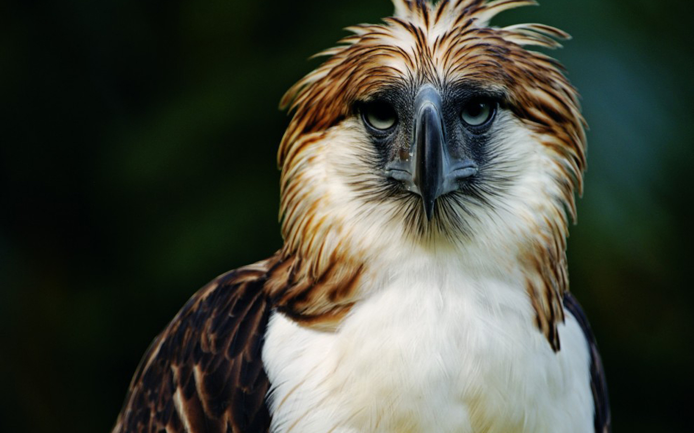

<!DOCTYPE html>
<html lang="en">
<head>
    <meta charset="UTF-8">
    <meta name="viewport" content="width=device-width, initial-scale=1.0">
    <link href="twitter-icon.png" rel="icon">
    <title>Twitter</title>

    <!--Links-->
    <link href="https://fonts.googleapis.com/icon?family=Material+Icons" rel="stylesheet" />
    <link rel="stylesheet" href="style.css" />
   <link rel="stylesheet" href="https://cdnjs.cloudflare.com/ajax/libs/font-awesome/5.15.3/css/all.min.css" />
</head>
<body>

    <!--Sidebar/Navbar Starts-->
    <div class="sidebar">
        <!--Twiiter Icon-->
        <i class="fab fa-twitter"></i>

        <!--Navbar-->
        <div class="sidebarOption active">
            <!--Sidebar Icons-->
            <span class="material-icons">home</span>
            <h2>Home</h2>
        </div>

        <div class="sidebarOption active">
            <!--Sidebar Icons-->
            <span class="material-icons">search</span>
            <h2>Explore</h2>
        </div>

        <div class="sidebarOption active">
            <!--Sidebar Icons-->
            <span class="material-icons">notifications_none</span>
            <h2>Notifications</h2>
        </div>

        <div class="sidebarOption active">
            <!--Sidebar Icons-->
            <span class="material-icons">mail_outline</span>
            <h2>Messages</h2>
        </div>

        <div class="sidebarOption active">
            <!--Sidebar Icons-->
            <span class="material-icons">bookmark_border</span>
            <h2>Bookmarks</h2>
        </div>

        <div class="sidebarOption active">
            <!--Sidebar Icons-->
            <span class="material-icons">list_alt</span>
            <h2>Lists</h2>
        </div>

        <div class="sidebarOption active">
            <!--Sidebar Icons-->
            <span class="material-icons">perm_identity</span>
            <h2>Profile</h2>
        </div>

        <div class="sidebarOption active">
            <!--Sidebar Icons-->
            <span class="material-icons">more_horiz</span>
            <h2>More</h2>
        </div>

        <button class="sidebar_tweet">Tweet</button>
    </div>
    <!--Sidebar/Navbar Ends-->

    <!--feed starts-->
    <div class=""feed>
        <div class="feed_header">
            <h2>Home</h2>
        </div>

        <!--tweetbox starts-->
        <div class="tweetBox">
            <form >
                <div class="tweetbox_input">
                    
               
                    <input type="text" placeholder="What's happening"/>
                    <button class="tweetBox_tweetButton">Tweet</button>
                </div>
            </form>
        </div>
        <!--tweetbox ends-->
    
    </div>
<!--post start-->
        <div class="post">
            <div class="post_avatar">
                
            </div>
            <div class="post_body">
                <div class="post_header">
                    <div class="post_headerText">
                        <h3>Dexter Gomez
                        <span class="post_headerSpeacial">
                            <span class="material-icons post_badge"> verified</span>@dexter
                        </span>
                    </h3>
                    </div>
                        <div class="post_headerDescription">
                            <p>I love Philippine eagle</p>
                        </div>
                </div>

                

                <div class="post_footer">
                    <span class="material-icons"> repeat </span>
                    <span class="material-icons"> favorite_border </span>
                    <span class="material-icons"> publish </span>
                    </div>
                        </div>
                 </div>
<!--post ends-->

<!--post start-->
<div class="post">
    <div class="post_avatar">
        
    </div>
    <div class="post_body">
        <div class="post_header">
            <div class="post_headerText">
                <h3>Ross Gamboa
                <span class="post_headerSpeacial">
                    <span class="material-icons post_badge"> verified</span>@Ross
                </span>
            </h3>
            </div>
                <div class="post_headerDescription">
                    <p>I love Philippine eagle</p>
                </div>
        </div>

        

        <div class="post_footer">
            <span class="material-icons"> repeat </span>
            <span class="material-icons"> favorite_border </span>
            <span class="material-icons"> publish </span>
            </div>
                </div>
         </div>
<!--post ends-->

</div>
 <!--feed ends-->


 <!--widgets start-->
         <div class="widgets">
            <div class="widgets_input">
                <span class="material-icons widgets_searchIcon"> search</span>
                <input type="text" placeholder="Search Twitter"/>
            </div>
            <div class="widgets_widgetContainer">
                <h2> What's Happening? </h2>
                <blockquote class="twitter-tweet">
                    <p lang="en" dir="ltr">
                        Sunset don &#39; t get better than this one ever
                        #nature</a>
                        />
                
                    </p>
                </blockquote>
            </div>
         </div>
<!--widgets ends-->

    </body>
</body>
</html>